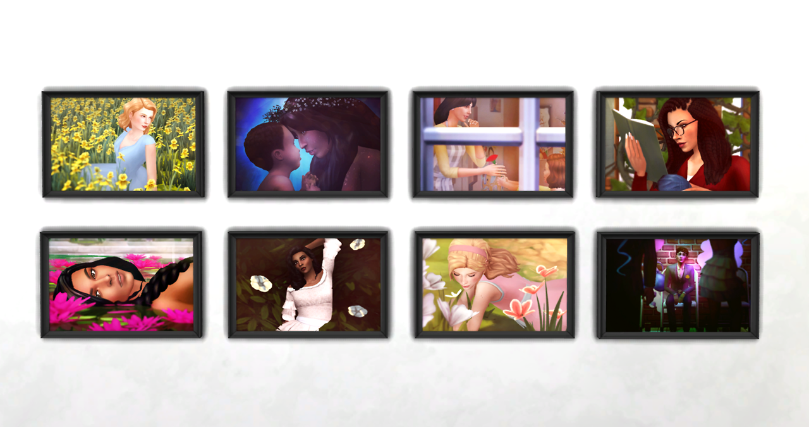
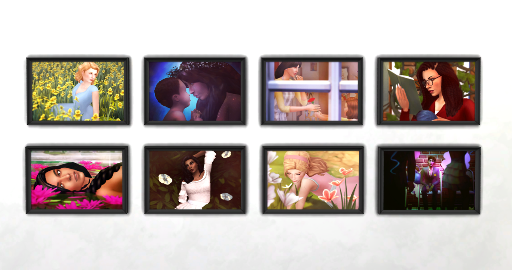
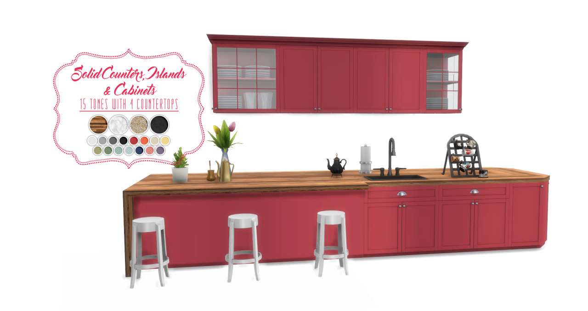
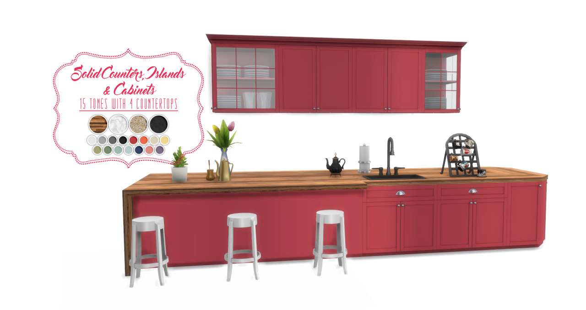

6/27/2018


 

femmeonamissionsims
April Flower Portraits
It’s the end of June and I’m finally wrapping up everything from the April CAS Challenge! Here are all 30 images framed; they come in 3 different size frames that can be mixed and matched together. For a closer look at the individual images, you can see all the originals here.
- 3 separate frames
- 30 images
- Base game compatible
DOWNLOAD: Mediafire | Simfileshare
TOU: Please don’t reupload or claim as your own. Feel free to recolor and include the mesh with credit.
Made with love and S4S ♥


 
